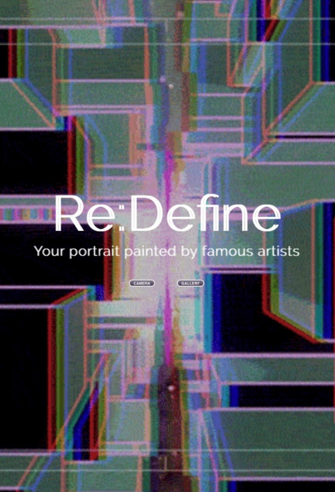
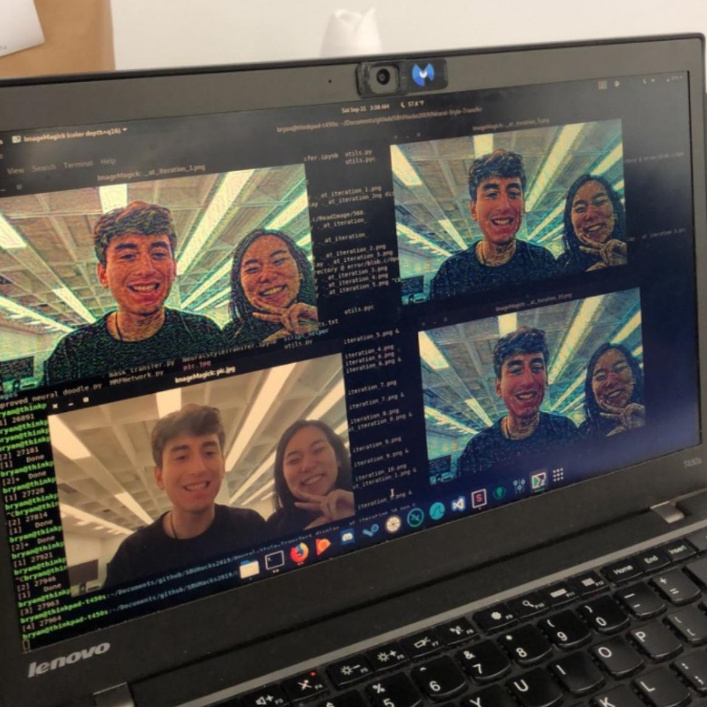
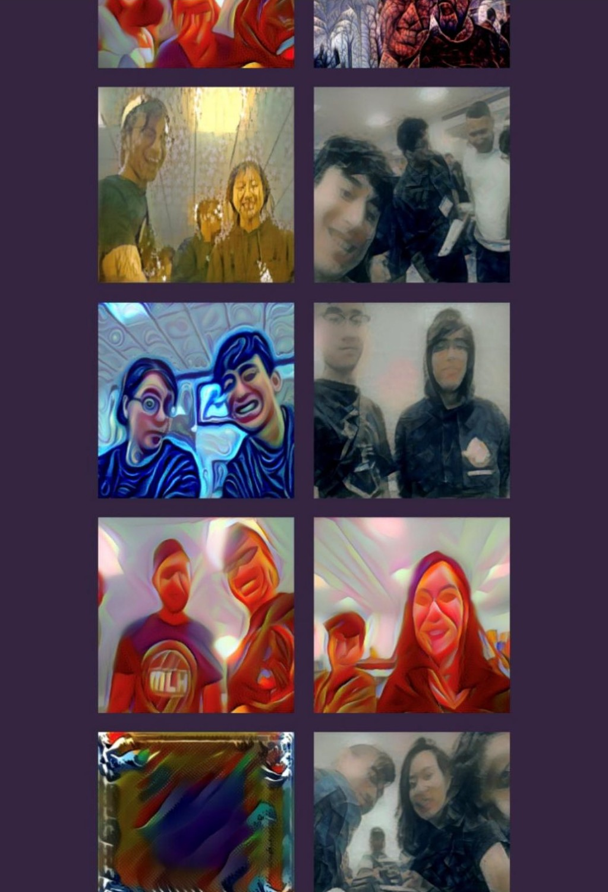

Re:Define
2019
ReDefine is a web application that utilizes Convolutional Neural Networks (CNN) to enable real-time image manipulation. Users can capture photos and transform them into various renowned painting styles, offering a dynamic interplay between art and technology. The site features a gallery tab where users can showcase their stylized images, enhancing the interactive experience. This platform celebrates the fusion of artistic expression with technology, inviting users to explore new dimensions of creativity.



×